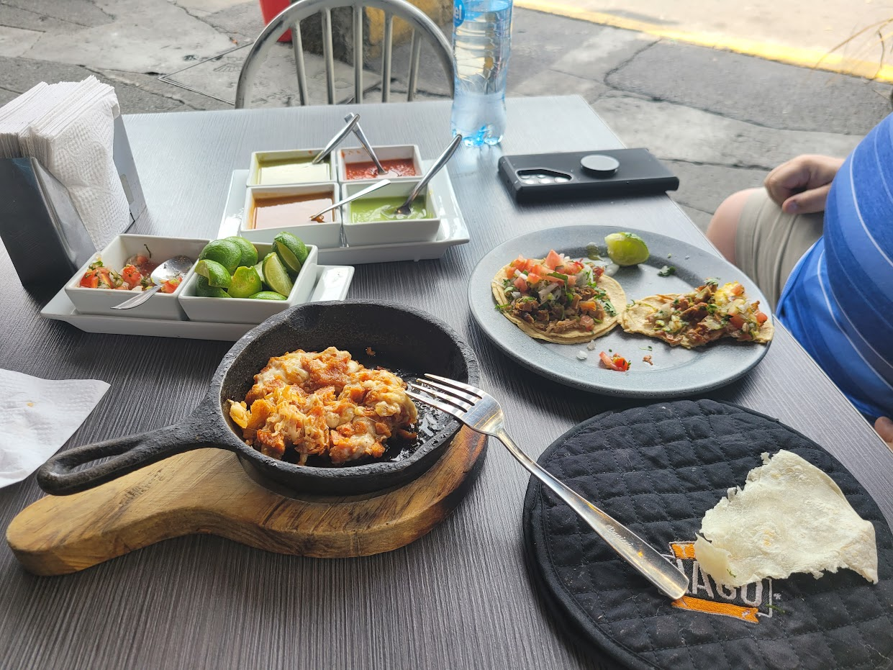
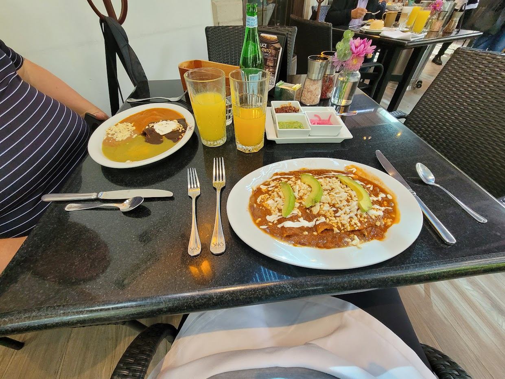
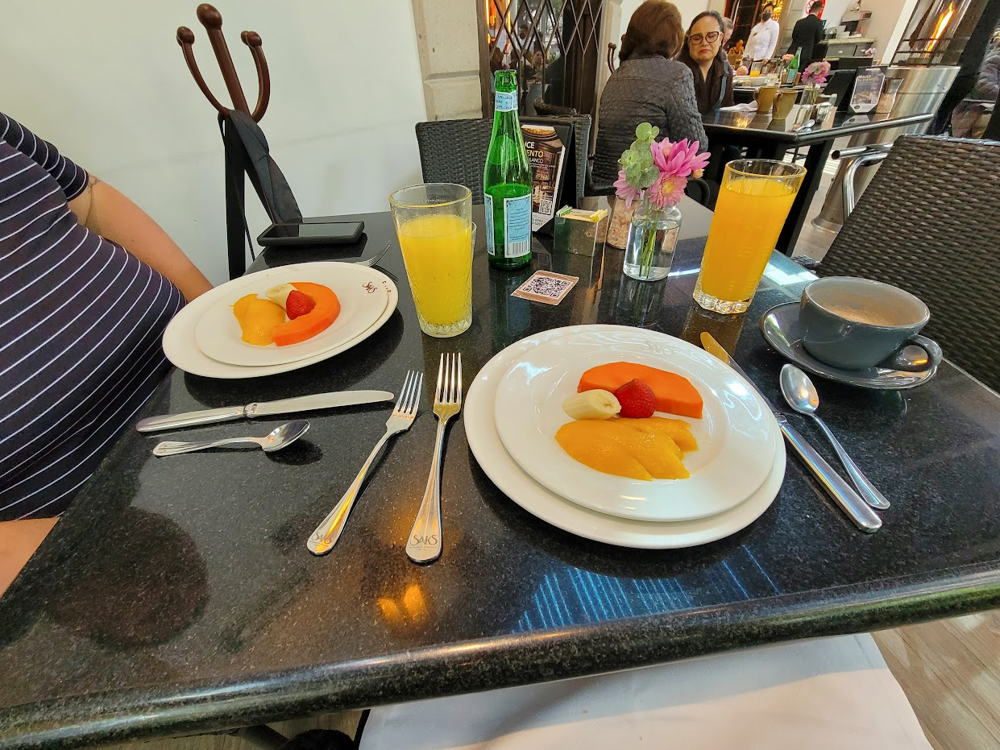

Mexico City has an abundance of street food and open air markets. Some of the best things we ate while we were there were from street vendors. We also had an amazing Uber driver who took us to his "Saudero Taco Guy"; it did not disappoint.
| Location to Visit | Link to Website | What we really liked |
|---|---|---|
| El Pescadito Taquerias | El Pescadito Taqueria | Fantastic shrimp and marlin tacos with an amazing condiment bar |
| Taco Naco | Taco Naco | The best choriqueso that I have ever had |
| Restaurantes Saks | Restaurantes Saks | All around wonderful dining experience. |

Shrimp and Marlin tacos at El Pescadito -

Choriqueso from Taco Naco near Chapultepec Park
- 
- 
-